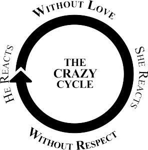

Something about how we are going to provide insights into meaningful ways that speak love to you.
Something about how we are going to provide you reports via email
Daily enter credits to your partner’s account for actions you received. Credits could include… acts of service, words of affirmation, quality time or touch that were made towards you.
A Love Bank credit is anything that is meaningful to you. Try to describe the credit you are given and rate the action.
According to Gary D. Chapman, actions that express a Heartfelt commitment to your mate can be broken into 5 languages.
If this is a new concept to you, we recommend you read his book and / or take the 5 Love Languages test at The 5 Love Languages.
Each Day, a report will be emailed to you containing the credits your partner entered.
This means that you get to read all about how you spoke to your partner's heart that day.
Very often, we are spending energy towards our partner, believing that we are helpful or making a sincere difference. Instead, the action can be unwanted or untimely. These actions, while they are kind, loving or well meaning, do not always speak to our partner in the way we intend.
Our intent is to help guide both you and your partner to better speak each others love languages.
Concepts used are from "The Five Love Languages" and "Love and Respect"
We believe that we can help couples learn about each other. Many times, we believe that we are doing loving acts for our partner, but in actuality we are not speaking their love language.
